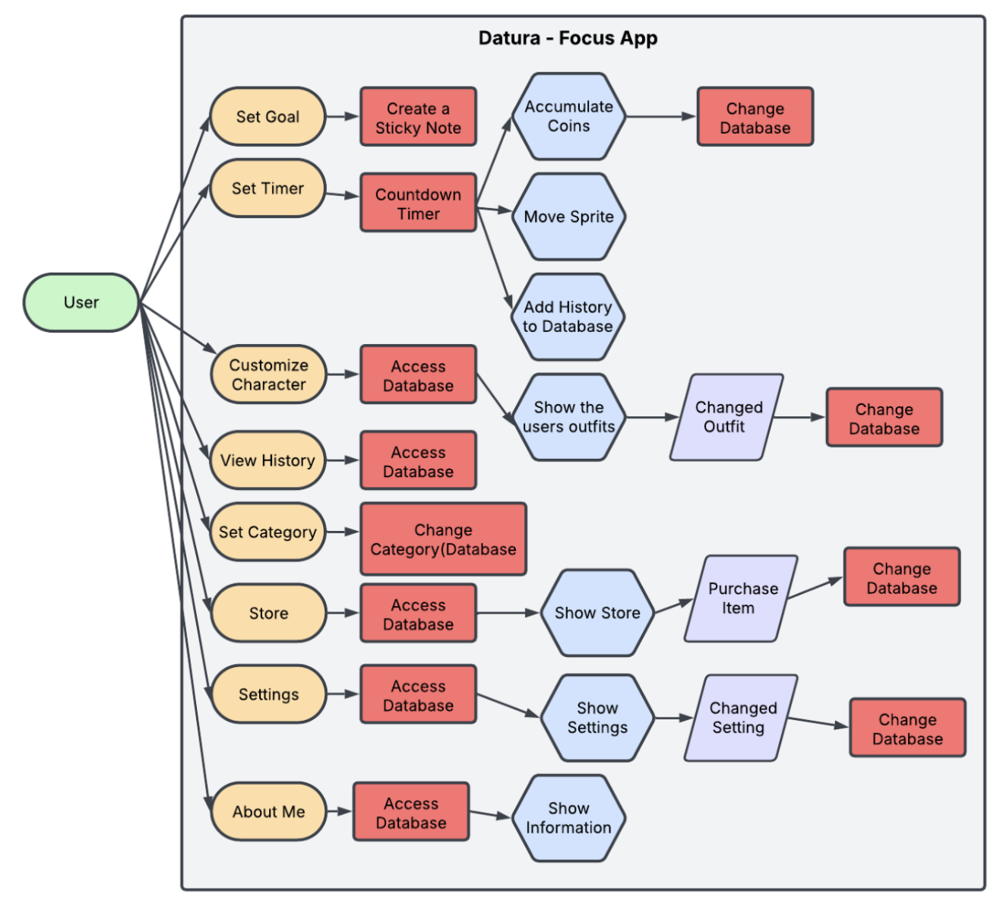
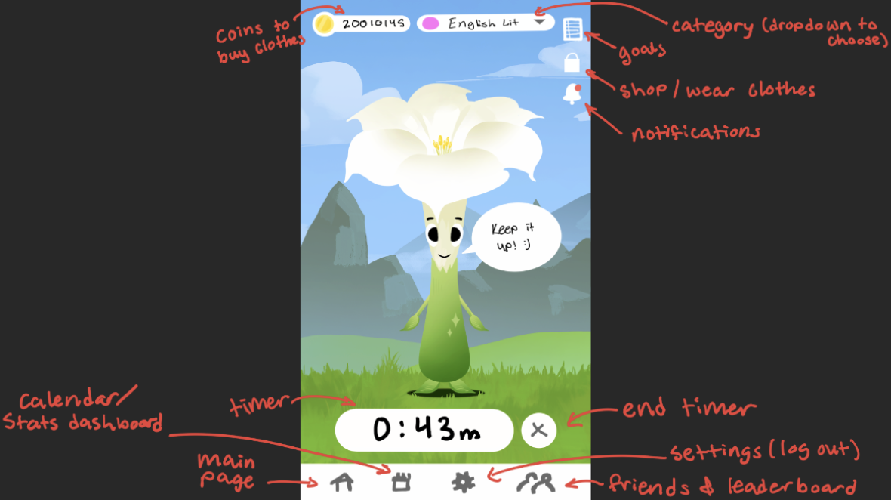
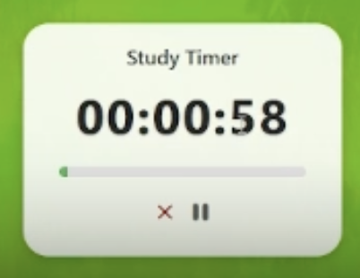
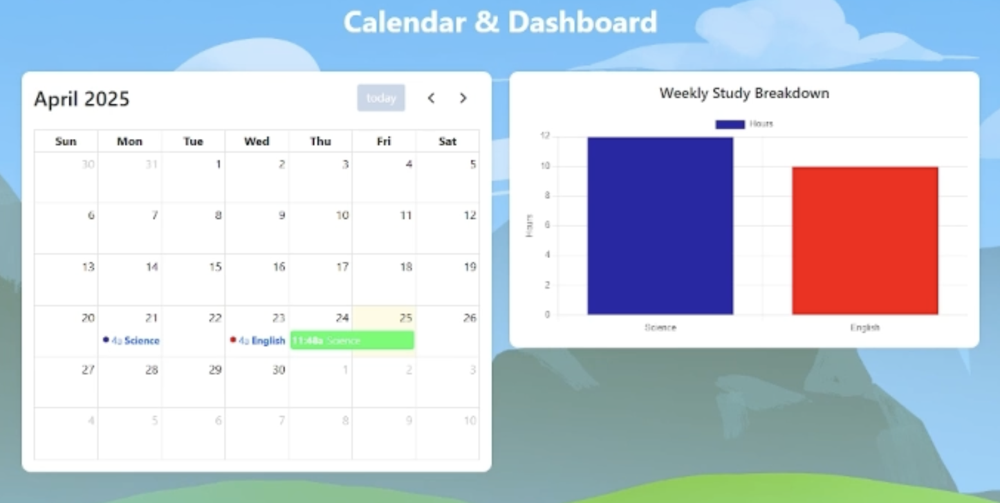
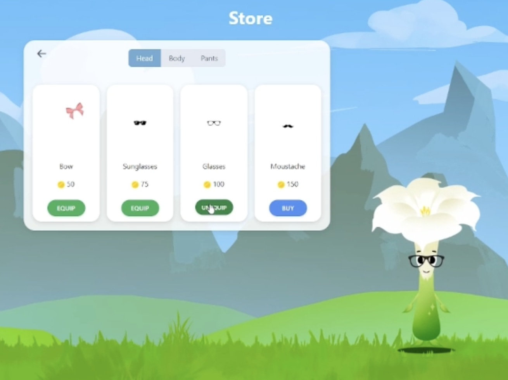

Video Demo
Summary
Datura is a full-stack study tracker app I built with a five-person team over six weeks for my Software Development class, inspired by the very real struggle of staying focused as a student. We designed it as an all-in-one space to track study sessions, compete with friends, and stay motivated, complete with a customizable avatar to give the app a more playful, engaging feel. On the technical side, we planned with user stories and wireframes, then built the app using Node.js, Express, PostgreSQL, and Handlebars, with Mocha/Chai tests to make sure core features like authentication worked reliably. Users can time themselves and log study sessions, track their progress, and compete with friends, giving it a competitive edge. This app ended up being a mix of clean functionality and personality, which made it feel like a fun tool you actually want to come back to.
The Problem
This was the final project for my Software Development class at CU Boulder. As a five-person team, we were tasked with developing an app to solve a problem. As college students, we all needed a better way to track study goals, organize topics, stay motivated, and hold ourselves accountable. That's when we came up with Datura, an all-in-one study tracker that lets users log study sessions, compete with friends, customize their avatar, and keep notes.
We designed the app for students who want to improve their focus and productivity, especially those who struggle with consistency. We had six weeks (March–April 2025) to develop a complete, functional, full-stack app.
The Process

We consistently worked on this project over those six weeks, holding weekly team meetings to track progress and adjust scope. Early on, we created use-case diagrams, defined functional requirements, mapped user flows, and sketched wireframes. We also wrote user stories from the perspective of new users, especially freshman students, to guide decisions around usability and navigation.

To make the user experience more engaging, I illustrated a custom, cartoon-style avatar inspired by a datura flower, along with background art to give the app a cohesive visual identity.
On the technical side, we built a full-stack web application using a Node.js/Express backend, PostgreSQL for data storage, and Handlebars for server-side rendering. After setting up the base architecture, we wrote unit and integration tests using Mocha and Chai to validate authentication flows. We tested both positive and negative cases for registration and login, ensuring proper input validation, error handling, and session management.
We designed and implemented relational database schemas to support core features, including users, study sessions, categories, friendships, leaderboards, notes, and avatar items. This involved defining foreign key relationships and structuring queries to efficiently retrieve user-specific data.


One of the core features was the study timer. We implemented a timer system that records session data upon completion or early termination, including duration, selected category, and rewards (coins). This data is persisted to the database and dynamically rendered into a calendar view and a bar chart so users can track their study habits over time.

Another key feature was the avatar customization system. Users can spend earned coins in a store to purchase and equip items. Initially, we ran into issues syncing the frontend state with backend data because we hadn't properly modeled equipped items or item categories in the database. After introducing additional tables to track equipped items and item types, we resolved these inconsistencies and improved state management between client and server.
The friends and leaderboard systems were the most challenging to implement. Handling friend requests required careful backend logic to maintain consistent state between two users. After debugging issues with request synchronization and database updates, we were able to establish a reliable friend system, which then fed into the leaderboard feature to rank users based on study activity.
On the frontend, I focused on UI/UX design, combining custom CSS with Bootstrap to create a clean, responsive interface. I prioritized readability, intuitive navigation, and visual consistency across pages. As a stretch goal, we implemented draggable sticky notes on the homepage, requiring client-side state and DOM interactions to allow users to create, move, and persist notes.
Going Forward
No project ever feels completely "done," and Datura is no exception. If I had more time, the biggest thing I'd revisit is the overall data flow between features, especially how tightly everything is tied to study sessions. I'd probably refactor parts of the backend into more modular services and rethink a few of the database relationships so scaling new features wouldn't require as many structural changes.
I'd also expand the social side more. The friend system and leaderboard ended up being one of the most technically challenging parts, but also one of the most rewarding. If I continued the project, I'd build on that foundation with group challenges, shared study rooms, or timed sessions between friends to make the competition feel more active.
On the frontend, I'd spend more time refining micro-interactions and consistency, like animation timing, feedback when actions succeed or fail, and making the UI feel even more responsive. The draggable sticky notes were a step in that direction, and I'd like to extend that kind of interaction across more of the app. I would also like to develop more character designs to give a more fleshed-out, fully customizable experience.
If there's one piece of advice I'd give someone building something similar, it's to design your database like you expect the project to grow beyond your original idea, even if you think it won't. Most of our friction came from features we didn't anticipate early on, and that's where we lost time having to adjust instead of moving forward.